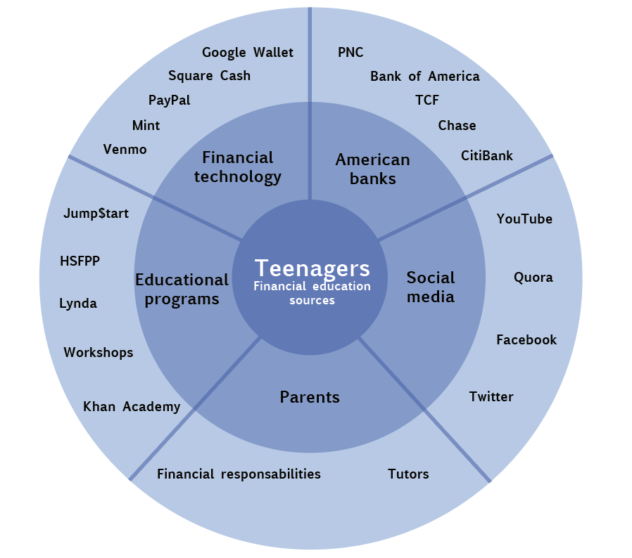

Teaching Teens Financial Education
This project proposed by PNC Bank, aimed to make teenagers more financially educated and get new clients to the bank. Studies have found that financial literacy is low among teenagers and that this could have important implications for financial behavior. Moreover, 55% of young adults are not saving in either an individual Retirement account or a 401 account. Teenagers spend an estimated $155 billion per year, mostly for recreation and luxury items. 79 % of students aged 16-22 have admitted they have never taken a class on finance. Our team produced a tool that could provide a better communication between teenagers and their parents, while teaching them financial education.

Project breakdown
Scope
8 weeks
5 person team
My roles
UX Researcher
UX Designer
Skills
Scenarios
Personas
Storyboarding
Speed Dating
Tools
Illustrator
Research
Competitive analysis
The team started the project researching what other banks were doing to teach teenagers financial education. This search was conducted online and some of the main insights were that most banks provided solely online information for teenagers to learn financial literacy. The text was usually divided by topics and people had to filter them. Some other banks provided different solutions, such as online games to teach users the value of money through simulations, group activities and videos. One of the banks even provided a "moving out camp", giving teens intensive training on basic financial aspects necessary when leaving home.
Stakeholder models
After doing the research, we created a stakeholder model, showing all entities that could educate teens on financial matters. The model created helped us better visualize the available stakeholders.
Current State Model
Based on the research findings, the team created a current state model, having our target group, earning teens, in the center and mapping which entities influence the group's spending habits. The influences are marked in the arrows, correlating each entity. The most interesting insight from this model is that we couldn't find a direct link between the teenagers and the bank, because most teenagers don't have bank accounts.
Ideation
Personas
The team created personas symbolizing a teenager, a parent and a banker; all the main agents involved in our product. This helped us to better analyze our users' and stakeholders' main needs and goals.
Storyboards
The next step was generating ideas and choosing the most popular among us to generate storyboards.

Iteration
Speed Dating
The team conducted speed datings with 5 teenagers, showing them the 8 previously developed storyboards. The main information obtained from these were that neither teenagers nor parents would like to have competing games. Most of them would like to have away of controlling or checking in an easy way their spendings. They also didn't seem excited to learn from games or from long videos,